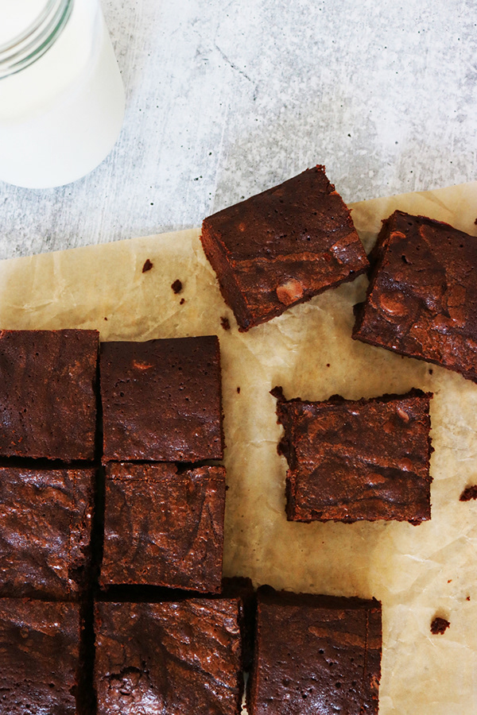

Brownies

Description
Brown butter adds both a richness and nuttiness to the brownies that I love. It also brings out some of the darker notes in the chocolate. I love using Dutch-process cocoa powder because it has a more intense dark chocolate flavor than natural cocoa powder, but if you like your brownies more on the milk-chocolate side, then natural cocoa will work just fine!
Ingredients
- Nonstick spray
- 2 sticks (1 cup; 227 grams) unsalted butter
- 1 cup (125 grams) all-purpose flour
- 1 cup Dutch-process cocoa powder
- 5 large eggs, chilled
- 1 1/4 teaspoons kosher salt
- 2 cups packed (426 grams) dark brown sugar
- 1 tablespoon pure vanilla extract or vanilla paste
- 5 ounces (140 grams) bittersweet chocolate (72% cacao or higher), chopped (bars, chips, discs or pistoles)
Steps
- Position a rack in the center of the oven and preheat to 350 degrees F. Spray a 9-by-13-inch baking dish, preferably metal, with nonstick spray. Line with parchment paper, leaving a 2-inch overhang on the 2 long sides. Lightly coat with nonstick spray.
- Position a rack in the center of the oven and preheat to 350 degrees F. Spray a 9-by-13-inch baking dish, preferably metal, with nonstick spray. Line with parchment paper, leaving a 2-inch overhang on the 2 long sides. Lightly coat with nonstick spray.
- Sift the flour and cocoa powder through a fine-mesh sieve into a medium bowl and set aside.
- Beat the eggs and salt in the bowl of a stand mixer fitted with the whisk attachment on high speed until the eggs begin to foam, about 1 minute. Add the brown sugar and vanilla and continue to beat on high until slightly thickened and creamy, about 1 minute. Reduce the speed to medium-low and slowly pour in the cooled butter (it should still be fluid, but below 125 degrees F or you will cook the eggs) on the side of the bowl so it doesn’t splatter. Increase the speed to high and beat until thick and creamy, about 2 minutes. This step is what will give you that shiny, crackled surface on the top of your brownies. Gradually add the cocoa powder mixture and beat until just combined (do not overmix). Scrape the sides and bottom of the bowl with a rubber spatula and continue folding the batter until completely combined.
- Scrape half of batter into the prepared pan. Top with the chocolate, then scrape in the remaining batter to cover and smooth the surface. Bake until the top forms a crust, the brownies are just barely firm and an instant-read thermometer inserted in the center registers between 200 degrees F (for fudgy brownies) and 205 degrees F (for cakey brownies), about 25 minutes; or up to 35 minutes, if using a glass or ceramic baking dish. (Don’t let the thermometer touch the bottom of the pan or you will get a much higher reading.)
- Let the brownies cool completely to allow the crumb to set before slicing, 3 hours.
- Use an offset spatula to loosen the brownies from the sides of the pan. Use the parchment overhang to lift brownies out of the pan and cut into 12 squares.